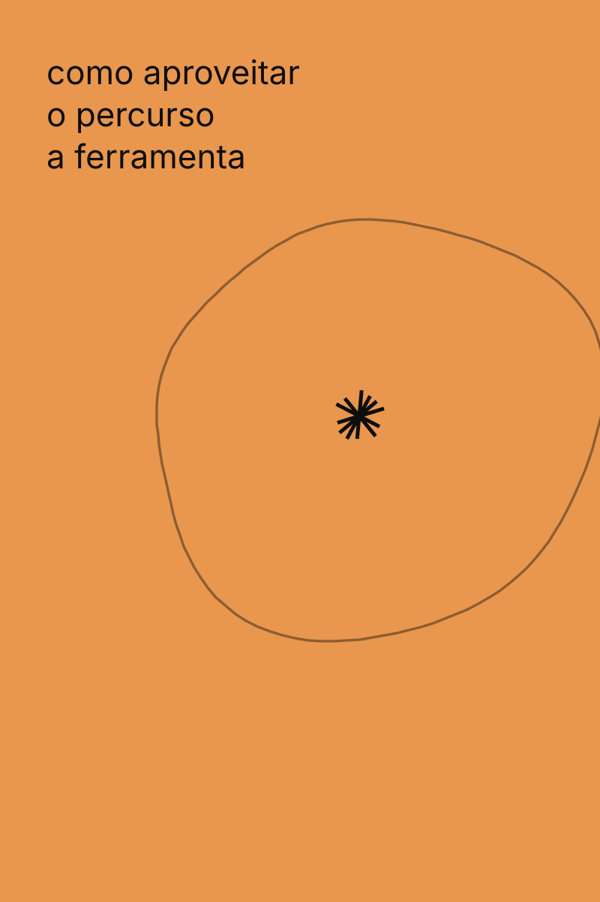
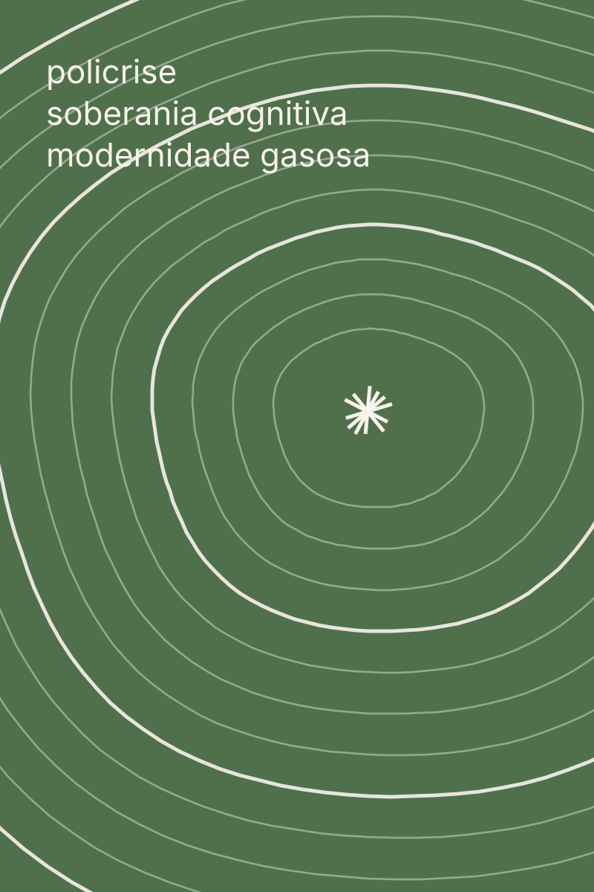
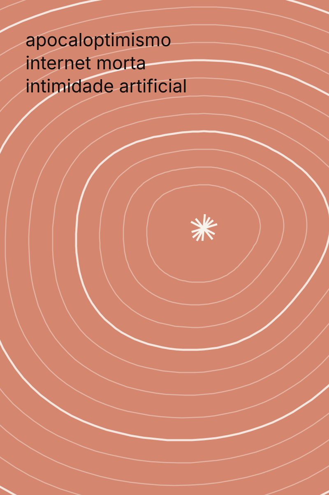
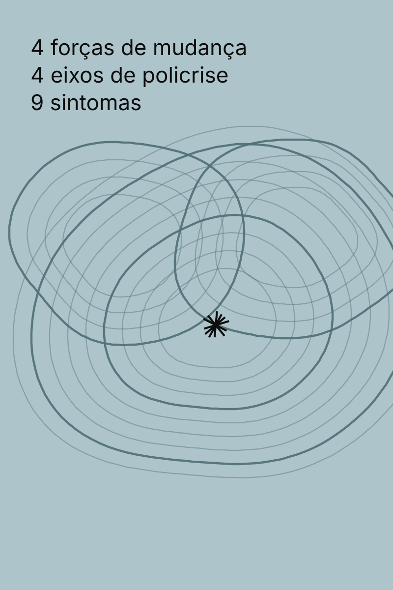

Meu percurso no curso O Mapa das Convergências
Seu percurso
As quatro etapas do curso
-

Comece por aqui 1 aula Concluído Rever conteúdo Acesso até 30/05/27 -

2026: o ano das convergências Módulo 01 · 12 aulas Você está aqui · 2 de 12 Continuar Acesso até 30/05/27 -

Futuro com Sabina: SXSW 2026 Módulo 02 · 13 aulas A seguir Ver conteúdo Acesso até 30/05/27 -

Mapa de Convergências 2026 A ferramenta · 17 nomes A seguir Ver conteúdo Acesso até 30/05/27